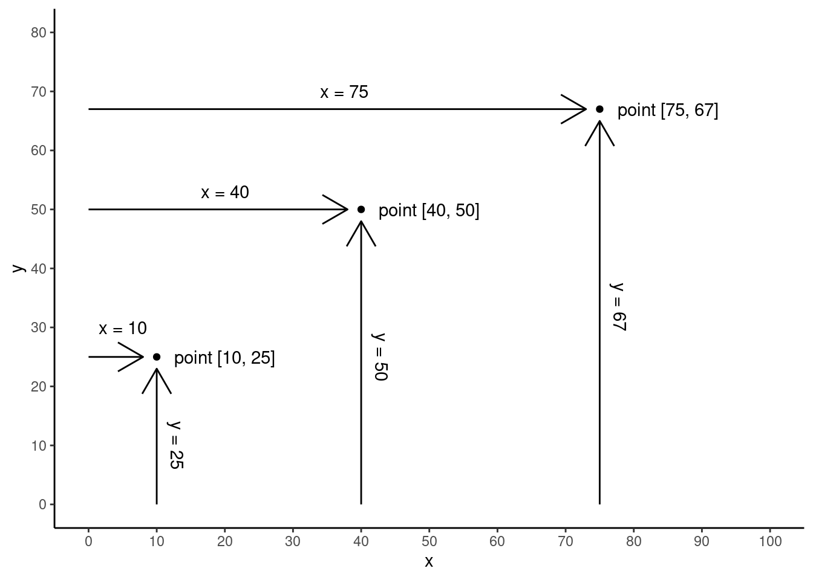
Unit 3 Concepts Reading: Linear Regression
What’s in this document?
The primary goal of this reading is to introduce the linear model – also called linear regression analysis. We’ll build up to regression by thinking about and visualizing relationships between variables, and we’ll try to wrap our heads around regression through the concept of prediction. We’ll discuss how to interpret the results of a linear regression, and how to apply it with categorical predictors.
In short, linear regression is one of our most flexible tools for performing statistical analysis with data, and understanding regression can provide a helpful foundation for expanding your analytic toolbox into more powerful and sophisticated techniques.
I will call attention to key terminology with margin notes. I will also ramble about side thoughts in margin notes as well. Sometimes the margin notes will be numbered,1 like footnotes that connect to a specific part of the main text. Sometimes they’re unnumbered, just hanging out whenever you feel like reading them.
1 This is a numbered side-note.
This is a margin note.
Interspersed in the text below are some Knowledge Checks for quizzing yourself. I encourage you to attempt to answer these as you encounter them, to help force yourself to process and understand the material more thorougly. After working through this entire page, make sure you answer these questions in the Unit 3 Knowledge Check Quiz on ELMS. I recommend writing your answers down in notes as you work through this page, and then just referring to your notes to review and provide answers when you take the quiz on ELMS. This is built-in way for you to review the material as you go.
If you have questions, reach out on the course Discord, and/or come to an Open Discussion Zoom session.
Happy reading!
Relationships between variables
In the previous unit, we focused on univariate analysis, namely in trying to understand the distribution2 of single variables. This is an important and critical step in our progression of data analysis. However, looking at single variables is usually not the end goal, in the sense of why we want to look at the data in the first place. What we usually care more about when we do data analysis is how variables are related to one another.
2 Reminder: the distribution of a variable is basically a description of what values are more common or likely. An empirical distribution is the distribution that is actually observed in a set of data, and a theoretical distribution is a mathematical model of how different kinds of variables should be distributed.
For example, measuring the ups and downs of a financial market might be of some interest, but what if we had other data, like information about companies or other external factors, and that data was closely related to the performance of the market? This might help us understand why a market goes up and down when it does.
Or maybe we would like to understand something about what kinds of factors make some songs more popular than others on Spotify, or maybe we are biologists interested in how body weight and brain weight are related, or maybe we want to know how increasing salaries improves workplace performance, etc. etc. etc. Most of the really interesting questions that can be answered by data are essentially questions about relationships between variables.
Just as univariate means “pertaining to a single variable,” we use the term multivariate to mean “pertaining to multiple variables.”
I am using the word “relationship” here to be intentionally vague. There are many possible ways that variables could be related, and many ways to describe those relationships. We will now start to sharpen this concept so that we can understand what kinds of relationships regression can help us explore, but keep in mind that there are aspects of relationships that will require more complex models than the simple linear model we are learning in this course.
If you’re not sure what I mean by linear model here, just hold that thought…
Visualizing continuous relationships: scatterplots
In the previous unit we started using plots such as histograms and density plots to explore univariate distributions. Visualization is a powerful and important tool, especially in exploratory analysis. So how do we visualize relationships? This is one of the more complex but rewarding uses for data visualization.
Let’s start with something simple: consider when you have two continuous (or interval) variables. If these variables are completely separate, like a list of student GPAs and a separate list of starting salaries after college, then we can’t establish any kind of relationship. So we need variables that are aligned, so that the first value in one variable is associated with the first value in the other, the second value with the second value, and so on, like a list of student GPAs and starting salaries, where we can tell which GPA and which salary belonged to which student. This is one reason we use data frames,3 because the variables (columns) are aligned through the observations (rows).
3 Refer back to the Unit 1 reading if you need a refresher on data frames.
4 Also sometimes spelled as two words, “scatter plot”.
Once we have data with this kind of alignment, the simplest way to visualize the relationship between two variables – like two columns in a data frame – is with a common type of graph called a scatterplot.4 This type of graph uses a standard x-axis and y-axis, which are the horizontal and vertical positions, respectively. The plot is created by plotting a point or dot (or sometimes other shape) for each row, where the value from one variable determines the x-axis position, and the value from another variable determines this y-axis position. See the schematic graphs below, showing how three data points (the dots) might be plotted in a scatterplot.
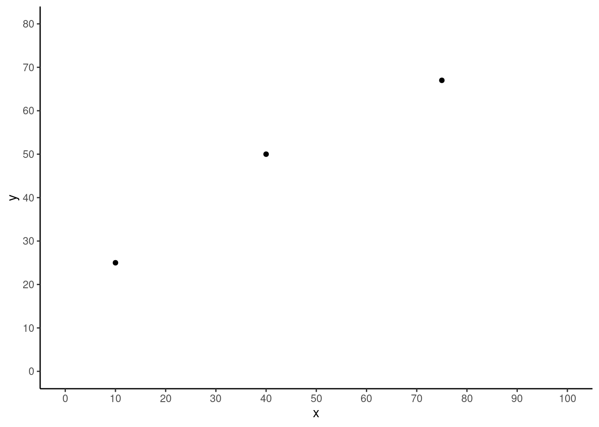
Let’s make this a little more concrete by looking at an example of real data.
Pearson & Lee’s Height Data
One important data set in the history of regression analysis was collected and famously analyzed by Pearson & Lee (1903), consisting of various physical measurements collected from family members such as height, arm length, etc. We’ll get into more details shortly, but first let’s just look at the data. I am taking just a sample of the full data set,5 consisting of the heights of 4,312 pairs of fathers and their (adult) sons, expressed in inches.
5 The data comes from the HistData package in R (which has further references and information), and the Code Tutorials in this unit will go through the code and analysis discussed here in more detail.
This means that every row of the data contains a pair of values, a father’s height in one column and the height of his son in another column. The conventions of data frames are what help us keep track of which father’s height goes with which son’s height, simply by how the data is arranged in rows. Here are a few rows of data, where each row is a corresponding father-son pair.
father_height son_height
62.5 59.5
62.5 59.5
63.5 59.5
63.5 59.5
64.5 59.5
64.5 59.5Visualizing height data (take 1)
Visualizing this data in a scatterplot is conceptually simple: for each row (which represents a father-son pair), we use the two height variables as the x-y coordinates for where to plot a dot. We just need to decide which is the x-axis variable and which is the y-axis. It often doesn’t matter, so for now let’s just choose the father’s height to be the \(x\)-value and the son’s height to be the \(y\)-value. We’ll come back to why that choice might make more sense than the reverse, but when you are initially visualizing your data, it’s not necessarily very important which variable goes where – you just need to keep track of it.
Figure 3 shows what happens if we create this plot in R.
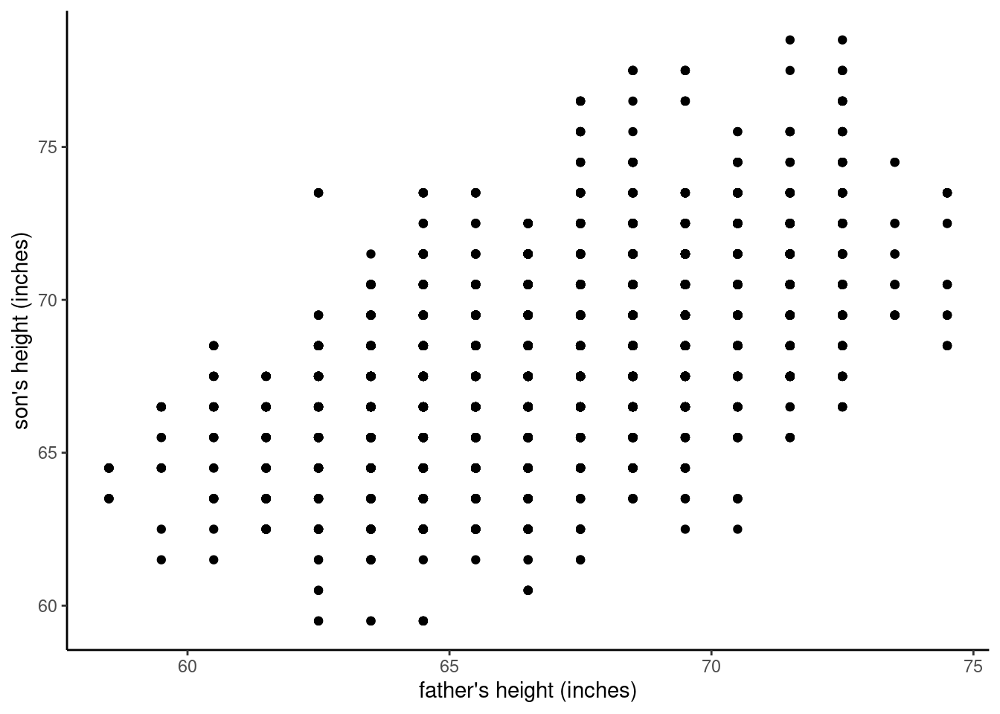
So what does this plot show us? First, we can see that there are many different values in the data. Second, we can see a general pattern where not all of the space is filled. Specifically, we can see that there are no values in the upper left, representing short fathers and tall sons, or in the lower right, representing tall fathers and short sons. For example, none of the fathers that are about 5’2” (62 inches) or shorter have sons that are 5’10” (70 inches) or taller, and none of the fathers that are 6’ (72 inches) or taller have sons about 5’5” (65 inches) or shorter.
But there’s another thing that should stick out about this graph, namely that it shows a strong grid-like pattern. Why? Well, if we’ve visualized the data accurately (and we can double-check our code to make sure we have), then what we see is that the data is not truly continuous, even though height should be continuous, at least in theory. In other words, while certainly some people in this data set may have been small fractions of an inch different in height, all of the heights in the data appear to be in one-inch increments, on the half-inches. For example, there are people with recorded heights of 64.5 inches and 65.5 inches, but no values in between those (like 64.6, 64.7, 64.8, etc.). We might conclude that whoever collected or recorded the measurements simply rounded off to these half-inch values.
Quick self-quiz: if this data is not truly continuous, what is it?
Now, let’s recall how this plot was created, and it should raise a red flag in our minds. Remember that for each row we placed a single dot on the plot, and we have a total of 4,312 father-son pairs (i.e., rows), so there should be 4,312 dots in the graph. A quick eyeball estimate should tell you that there are a lot fewer dots than that visible in the graph. Now consider why: imagine that we have one father-son pair that are the same height, both 68.5 inches tall. That dot would be plotted at the coordinate [68.5, 68.5]. But out of that many fathers, how likely is it that there would be another father-son pair of the same height? Pretty likely! And in that case, we would simply plot another dot in the same place.
Now imagine this happening many times. This is what is known as overplotting,6 because we have essentially plotted data over other data, so in fact there are many points that we can’t see. This is a bad thing because it means that the patterns we are interested in may be obscured.
6 Overplotting occurs when a data visualization obscures much of the data, and is usually due a large amount of data being plotted in a limited space or range of values.
Managing overplotting: examining heights, take 2
Overplotting is a common problem, especially in large data sets, but there is not a “one-size-fits-all” solution, largely because there are many different causes and patterns of overplotting. However, there are a few common strategies that can help, especially if we are just trying to carry out an exploratory analysis.
One of the first things you can do in R is to “jitter” the exact location of each point in the scatterplot. In other words, since the problem is that all the points at (for example) [68.5, 68.5] are covering each other up, if you just add or subtract small, random amounts to each value, the dots will mainly “dodge” out of each other’s way, making them visible. We can see this in the figure below.
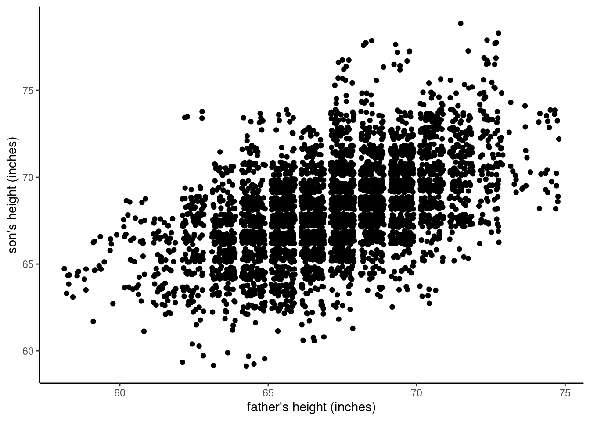
Now what do we see? Well, now there are these big “clumps” of dots in the middle of the graph, and we can see the dots spread out more on the edges. This is helpful, because now we can see that yes, in fact there was a lot of overplotting in the original graph, and there was a lot more overplotting in the central values than more extreme values.
However, there may still be a good deal of overplotting, since those clumps look almost completely “filled in”, and it may be that some dots are still “hiding” under other dots.
Managing overplotting: examining heights, take 3
Another common strategy, especially with modern graphing systems like R, is to adjust the transparency7 of the dots, so that if two or more partially-transparent dots are plotted on top of each other, the result is a darker dot, not a completely hidden dot. Our brains naturally interpret these darker areas as being more “dense,” so it is a useful way to convey data density when you can get the level of transparency right. The figure below shows another “jittered” plot, but also makes each dot have 80% transparency.
7 In the terminology of graphics, the level of opacity is often called alpha, where an alpha of 1 is fully opaque (not transparent at all), and an alpha of 0 is completely transparent (which would be invisible).
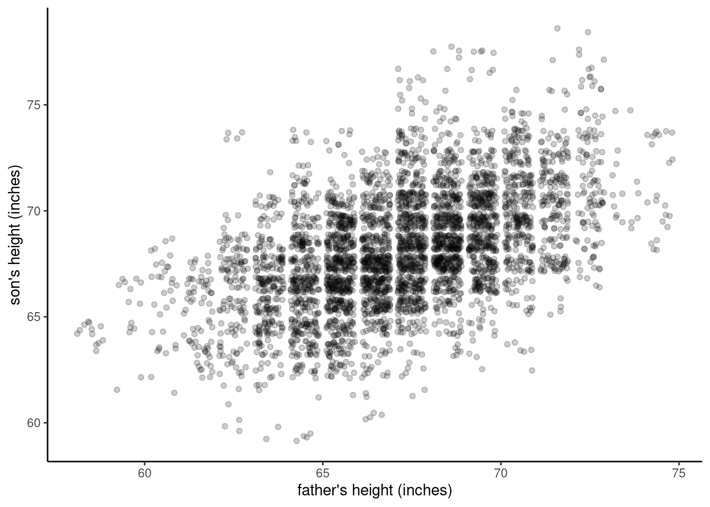
As you will see in the Code Tutorial on scatterplots, it can be quite easy to adjust the jitter or transparency of points in order to quickly manage the obscuring effects of overplotting. However, even though the plot above gives us a better idea of what’s going on, it’s not necessarily ideal, because the jitter means that it is not depicting the data with 100% accuracy, and it makes the data look more continuous than it actually is.
Managing overplotting, take 4
One final strategy we’ll examine is to use the size of the dots to indicate how much data is plotted at a given spot on the graph. For example, consider that father-son pair where they are both 68.5 inches tall. In the first graph, many points were plotted on top of each other, so it essentially hid from us how many pairs of fathers and sons were at that height. Since this is a common occurrence in this data set due to the fact that the measurements are in 1-inch increments with over four thousand pairs, we can explicitly count how many [68.5. 68.5] pairs there are. For example, it turns out that in this data, there are 116 father-son pairs at the [68.5, 68.5] coordinates alone, meaning that in that very first scatterplot, we were actually plotting 116 dots right on top of each other, amking it look like a single point! If we calculate all of these “overlapping” counts, for each of the points in the “grid” pattern that we saw in the first plot, then we can use R to adjust the size of the dots to reflect how many pairs are at each coordinate.
The resulting plot is given below.

It’s arguable which of these plots is the “right” solution to overplotting; the point here is to describe the process. What we are trying to do is to visualize all of the data, in the most faithful way we can. Our first step is to try a simple scatterplot, but then we realized that overplotting was hiding much of the data. Jittering, adjusting transparency (or alpha), and using aggregation and another dimension such as size are different methods for overcoming overplotting and revealing the actual pattern in the data. Whichever one is your favorite for this case, you should be able to see that the pattern in the later graphs is much more clear than it was in that first scatterplot.
The bigger point here is that we are putting effort into this process because we are still in the exploratory mode of analysis. We are trying to see the data, to get a sense of how these variables might be related, but if we are not careful about how we are visualizing, we might get misleading ideas about what we’re looking at. Overplotting is just one of many issues that can happen in this process, but it’s common enough that it’s worth digging into.
Knowledge Checks
Time to quiz yourself on a few concepts:
- Describe how the positions of points are determined in a scatterplot.
- When we create scatterplots, it’s conventional for the \(x\)-axis and \(y\)-axis to be used for different types of variables. For each of the following, indicate the axis it’s typically plotted on. (Note: some of these terms are essentially equivalent.)
- predictor
- outcome
- dependent variable
- independent variable
- response
- Describe what overplotting is and why it’s a problem.
- How many strategies for dealing with overplotting are described above? Can you think of any others?
Statistics helps us quantify relationships
Now that we’ve visualized something that looks like a pattern in our data, let’s talk more about what that pattern is, and how we can analyze it using regression. This is moving us along the path between exploratory analysis (“hmm, looks like there’s a pattern here”) and inferential (or sometimes, confirmatory) analysis (“okay, what can we really say about this pattern, and how confident can we be?”)
The pattern itself is fairly clear: the height of a father and his son(s) are clearly related, such that tall fathers tend to have tall sons, and short fathers tend to have short sons. This is shown in the graph by the overall shape created by the pattern of dots, where they tend to go from the lower left corner (short fathers and short sons) to the upper right (tall fathers and tall sons).
Now, you might be thinking, “so what? That seems obvious!” Well, maybe, maybe not. First recall that this data is from around the turn of the 20th century, at a time when scientific knowledge about heredity, genetics, and evolution was still in beginning stages. So this pattern was not necessarily as obvious as it is today.
But more to the point of this course, what statistical analysis gives us is a set of tools for powerful quantification of patterns. That is, sometimes an overall effect or pattern may be “common knowledge” or “obvious”, but knowing exactly how much a pattern holds is usually not obvious. In the example of this height data, we might say, “okay, we might assume that height is at least somewhat inherited, but how much is inherited?” Analyzing data using statistical methods is a way to get more precise answers.
The linear model
The mathemetics of statistics gives us the foundation for getting more precise answers to our questions. In the previous unit, we introduced the concept of a statistical model: a simplified view of the world. And we discussed how models have parameters or “settings” that change the overall shape (or distribution) of the data expected from the model. Our examples were models of continuous number distributions such as the uniform and normal distributions, and their parameters.
Now we are ready to introduce one of the most commonly used and powerful tools in statistics, the linear model (or sometimes linear regression model). This model has the virtues of being both simple and extremely flexible.
The essence of the linear model goes back to simple geometry and the equation that defines a line:
\(y = \alpha + \beta{}x\)
… where \(y\) is the value on the y-axis corresponding to \(x\), the value on the x-axis. The other terms \(\alpha\) and \(\beta\) (“alpha” and “beta”) are the intercept and the slope of the line, respectively. In other words, if you know:
- \(\alpha\): where the line hits the y-axis (i.e., the \(y\) value corresponding to where \(x\) equals zero), and
- \(\beta\): the slope of the line (i.e., how steep it is)
… then you can fully describe a specific line, because for every \(x\) value that you plug in, you can compute the corresponding \(y\) value to describe a point on the same line. And since these two values \(\alpha\) and \(\beta\) are the values that define the “shape” of the line (where it’s positioned vertically and how steep it is), we can call these the main parameters of the linear model.
Why a line?
So what good is this? Why would we want to model data with a straight line? Remember, the goal of a model is to give us a simplified version of the world, that is still accurate enough to be helpful. The linear model is a way of representing a relationship where the value of one variable tells us what the value of the other variable should be.
For example, if we know that the relationship between two variables is a line that has a steep, positive slope, that means that as one variable increases, the other variable also increases. Now imagine some data you might care about, like how the time spent studying might be related to your starting salary after college. Next imagine you knew the parameters of that line, where you knew exactly how much weekly study time would affect your future salary. That would be valuable information!
First, knowing whether the slope is positive (more studying = higher salary) or negative (more studying = lower salary) would be pretty important, even if we might generally assume that the slope ought to be positive. But knowing the exact slope would also be incredibly helpful. For example, if you knew that above baseline expectations, every additional hour of average study time per week corresponded to an extra $5,000 per year of salary, you might have a very different level of motivation than if you found that every additional weekly hour of studying only corrresponded to an extra $100 per year.
Just to be clear: I’m making these numbers up. And if you are starting to think things like “how could you get a single number like that, surely it’s not the same for everyone?” or “if you got a number like that, how certain could you be about it?” or “what kind of data could you get to calculate numbers like this?” then you are thinking like a good data analyst!
Being able to describe relationships between variables with the linear model is very powerful.
Regression as prediction
Another way to talk about how we use the linear model is as a method for making predictions. Going back to the Pearson & Lee (1903) height data, you could imagine that once we’ve done the analysis and we have a model, we could make predictions. If we have the \(\alpha\) and \(\beta\) parameters, and if we know the height of a father (\(x\)), we could predict the height of his son (\(y\)), even before the son is born.
By convention, we use the \(x\) variable as the predictor variable. The idea of a predictors is that it is a known quantity that we would like to use to make predictions about the \(y\) variable. In turn, we typically call the \(y\) variable the predicted or response value. Other terms for these variables are the independent variable (which is the same as the predictor) and the dependent variable (the same as the response).
In this course, we will stick with the terms predictor (for \(x\)) and response or outcome (for \(y\)). The terms dependent (for \(y\)) and independent (for \(x\)) can be useful if we were focusing purely on experimental data, but otherwise they can be confusing. So in an effort to try to keep our terms simple, we will stick to the idea of using one (or more) variables to predict another variable, where we are trying to predict responses or outcomes. For example, we can use the height of a father to predict the “outcome” of how tall his son is likely to grow.
The main danger of these terms is that sometimes the concept of prediction doesn’t quite describe what we are doing. But more often than not, it’s a useful frame of mind when we are approaching the problem of understanding relationships betwen variables.
Predictions are “best guesses”
If we can (at least for the moment) accept the idea that it’s helpful to represent data relationships with a linear model, the question now becomes, “how do we figure out the values for the equation for the line?” We can re-phrase this question as, “how do we figure out the parameters for the model?”, because as we noted already, if we know the parameters, we know the equation and we can make predictions.
Now it’s time for a reality check. Consider the data from the heights of fathers and sons, with the last graph we made, repeated here in the margin:
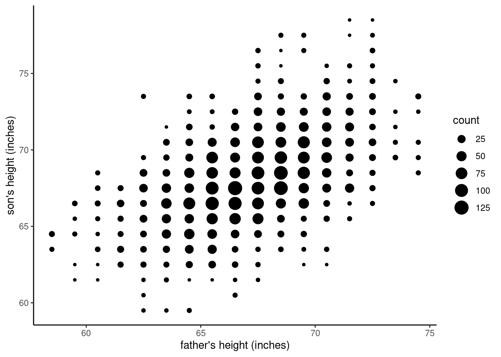
Does that pattern look like a straight, narrow line? Not really! However, it does look pretty “linear”, in the sense that the pattern goes from the bottom left to the top right, in a pretty straight direction. The issue is that it’s not a simple straight line, but kind of a fuzzy, fat blob, albeit one that is sort of “stretched” in a positive linear direction.
The reason for this is – not to sound too philosophical – is that we live in a messy, noisy, complicated, imperfect world. And especially when we try to talk about prediction, you should understand that making actual predictions is extremely difficult!
Looking at the data, for fathers that were measured at 68.5 inches tall, the sons’ heights were anywhere from 63.5 inches to 77.5 inches. So does this mean that we can’t make any kind of accurate prediction based on this data? Not at all, because of how those numbers are distributed, such that many of the values are close to the center of the “blob”. For example, if we knew that the father was 68.5 inches tall, and we guessed that the son would be somewhere between 1 inch shorter or taller than that, we’d be right well over half the time. That’s not too shabby!
The message here is that when we talk about “predictions”, that’s a short way of saying “best guesses based on our data and our model.” Sometimes those best guesses are quite good, and sometimes they’re not. That’s why we need statistical analysis, to be able to quantify not only what the “best guess” is, but also how confident we can be in that guess.
Finding the best fit: minimizing prediction errors
We will address the issues of confidence and uncertainty in Units 4 and 5. Right now, we are concerned with figuring out our best guess. How do we get to that best guess? What does “best guess” mean in terms of our linear model? Recall that our goal here is to get the parameter values for the model; once we have the parameters, we have defined the model. So rephrasing our problem a bit, what we need is a way to get the best guess for the parameters. That is, once we have our “best guesses” for what that parameter values are for our model, we can use that model to make “best guesses” for any hypothetical data point be are trying to predict.
The solution here is that the best model is the “best fit” for the data. But what does that mean? The best fitting model is the model that produces the most accurate predictions. This means we need to quantify how good our predictions are, and for that, we need the concept of an error.
Error is another term that looks like a common word (meaning “mistake”) that has a related but actually quite technical meaning in statistics. When we talk about the errors of a model, we’re not talking generally about “mistakes were made.” We’re talking specifically about the quantifiable differences between model predictions and real, observed data.
For example, if we had a father with a height of 68.5 inches, and we guess that the son would be the same height, we’d be right a lot of the time. But what about the sons who were taller or short than that? If we guessed 68.5 but the son was actually 63.5 inches tall, our guess would be off by 5 inches. In other words, we’d have a prediction error of 5 inches.
Armed with this concept, we can now revisit our goal of defining what makes the best model: it’s the model that minimizes prediction errors.
Model estimation: Ordinary Least Squares
Even though we now have a more precise concept for what we are trying to do, I am glossing over the exact mathematical tools and process to do it. The term for the process of how to get our best guess parameters is called estimation. There are actually many different mathematical (and computational) techniques for parameter estimation, with different pros and cons. But the common concept is that we use a statistical method to estimate parameters, and those estimates are our “best guess” for the model that best describes our data. For us, this means minimizing the prediction errors that our model makes.
The good news is that R (or whatever other software you may use) does the math for you, and in practical terms, parameter estimation is just a matter of running a function and knowing how to read the output. However, it’s important to understand how the estimation process works, at least conceptually, because it helps us to understand how to use our models in practice.
Explanations and examples of how to fit an OLS model in R and get the parameter estimates are in the Code Tutorial on using the lm() function.
We have said that we would like our model to minimize prediction errors. Let’s get a bit more technical and precise about what we mean by that. What we actually want to do is to minimize the squared errors. You literally just take the difference between the prediction and the actual value (that difference is called the error), and then you square it. Then you add up all of those squared errors for all of the data you have, and that quantity is (appropriately) called the sum of squares. The best-fitting linear model is the line that makes this sum of squares the smallest, because the smaller the sum of squares, the smaller the errors. More intuitively, the best-fitting line through the data is the line that goes through the “middle” (mean) of the data. One mathematical technique for computing this is called Ordinary Least Squares (OLS), because it is computing the line that minimizes the sum of squared errors.
It turns out that under typical assumptions, there are other algorithms that get the same results as OLS, including the Maximum Likelihood (ML) algorithm. In this course, we are mainly focused on the concepts, and not going deeply into the math. But it’s good for you to know that generally, there are some different computational and mathematical tools out there for arriving at essentially the same answers.
A quick note on the terminology here: the process of estimating the parameters of a model based on observed data is called fitting a model. This term gets used in the following way with several common phrases:
- fitting a model means performing a regression and getting the parameter values
- examining a model fit means checking how well a model fits a set of data
- a fit model just means a model that has been fit
- etc., etc.
Don’t get too bogged down in these terms, though; I’m just giving you a heads-up on how these words get used by statisticians. The idea is that the process of fine-tuning our linear model to the exact parameter values that best predict our data, we have made the model “fit” the data as closely as we can.
Interpreting a linear model
Once we fit a model and have our parameter values, then what? Of course, the answer depends somewhat on why we are doing the analysis in the first place, but for now, let’s focus trying to interpret what the model parameters mean.
If we fit a linear model to the raw height data from Pearson & Lee for predicting the height of a son based on the height of the father, we get an intercept (\(\alpha\) or “alpha”) of around 33, and a slope (\(\beta\) or “beta”) of around 0.5. What do those values mean?
We will go over how to get these values in R in the Code Tutorial on the lm() function. For now, just trust me that these are the correct values.
First, let’s discuss the slope. Slope refers to how steep the line of our model is, but it also has a very literal mathematical interpretation:
Slope: for every change of 1 unit in the \(x\) variable, expect a change of \(\beta\) units in the \(y\) variable.
In terms of our height data, and the slope of 0.5 in our model, this translates to “for every difference of 1 inch in the father’s height (our \(x\) or predictor variable), expect a difference of 0.5 inches (the slope or \(\beta\)) in the son’s height (our \(y\) or response variable).” For example, if we were comparing predictions from two different fathers, and Father A was 4 inches taller than Father B, we would expect Father A’s son to be 2 inches taller than Father B’s son. This is because for a difference in 4 units between Father A and Father B, we’d expect a difference in \(4 \times 0.5 = 2\) units between Son A and Son B, since the slope is 0.5.
I highly recommend working through this paragraph a few times, slowly, to make sure you’re following how all of this follows from just knowing that the slope parameter is 0.5.
Framing things only in terms of slope gets us differences, but not exact predictions. For example, if we have a father who is 72 inches tall, how tall would we expect his son to be? For that, we need to talk about the intercept.
Recall that the intercept for a line is just the place where the line hits the \(y\)-axis. In other words:
Intercept: the value of \(y\) when \(x\) is zero
But let’s think about what that actually means. In this case, since our \(x\) variable is the father’s height, and R tells us that the intercept is around 33, it means something like “if the father has a height of zero inches, we predict that the son will have a height of 33 inches.” A father who is zero inches tall?!? That doesn’t seem to make much sense, does it?
Here is where we can return to the concept of transformations to help us better understand and interpret these numbers.
Transformations can help (or hurt) interpretation
Recall that transformation is just a general term for modifying the values in a variable. We started talking about how to perform transformations in this Code Tutorial, where we focused especially on how non-linear functions like the logarithmic function can change the shape of a variable’s distribution. But here, we can talk about how simple addition and subtraction (which are examples of linear functions) can help us interpret and use a linear model.
First, let’s step back and consider our data from a slightly different angle. Here we have heights of people. Clearly, we don’t care about the heights of people who are 0 inches tall, because they literally don’t exist. But what about something like “the average father/son”? In other words, instead of asking “what’s the expected height of a son whose father is zero inches tall?”, we could ask “what’s the expected height of the son of an average-height father?” This is a much more reasonable question.
In order to do this, all we need to do is transform the father variable, so that a value of 0 represents “the average father height” instead of “zero inches tall.” In order to do this, we just need to compute the average height (the mean), and subtract that mean from each of the values in the father_height variable. Think about why this works. Imagine the average father height is 67.5 (it’s actually 67.2 in this data, but close enough). Then if you take a father who is exactly 67.5 inches tall and you subtract the mean of 67.5, you get 0, because this person is exactly the average height. If you subtract the mean of 67.5 from a father who is 72.5 inches tall, you get 5, which in this case means “5 inches taller than average.” And similarly, if you have a father who is 62.5 inches tall and you subtract the mean, you get -5, which means “5 inches shorter than average.”
Subtracting the mean of a variable from all of the values in that variable (which essentially means that the new variable has a mean of zero) is actually a very common and useful process, and it’s called centering because it adjusts the values such that the variable’s mean is centered on zero. For a centered variable, negative numbers mean “less than average” and positive numbers mean “more than average.”
A centered variable has a mean value of zero. In order to center a variable, all you need to do is to subtract its mean value from every individual value in the variable.
If we center the father_height variable and fit a new model with this new variable, the slope does not change. This is an important point we’ll return to. But the intercept changes, and now the intercept estimate is about 68 in this new model. How do we interpret this new intercept? Recall the definition from before:
Intercept: the value of \(y\) when \(x\) is zero
So this means that 68 is the expected value of the son’s height (our \(y\) or response variable) when our new centered variable is zero. And since a value of zero for the centered variable means “the average height of a father”, we can interpret the value of 68 to mean “the expected height of the son for an average father.” This is much more reasonable than talking about making predictions for a father who is 0 inches tall, and now we know that an average father in this data is expected to have a son around 5’8”.
Now, what happens if we also center the son_height variable? We can easily do this and re-fit our model with the two centered variables, but now the intercept is essentially zero (or as close to zero as R can compute). This is because when we compute the best fitting line using OLS, that line always passed through the “middle” of the data, meaning the point where the mean \(x\) and the mean \(y\) intersect.
Read that last sentence again, and think about it. Every simple linear regression (estimated using OLS) ends up estimating a line that passes through the coordinate [mean of \(x\), mean of \(y\)]. So if we center both variables, that means the mean of both variables is zero, so the line passes through [0, 0].
In practical terms, it means that if you center both of your variables, you can ignore the intercept because it will always be zero.8 But it also means you might be missing out on some helpful interpretation, like when we center just the father’s height, we can easily see that the average son’s height is 68.
8 Of course, if it isn’t zero, that might be a good indication you did something wrong, either with the centering or with the regression! But also note that software like R may not get exactly zero, but a number that is extremely small, and that’s just due to the inherent limit on how many digits can be computed on a given system.
So as a rule of thumb, centering predictors is often a good idea, but other transformations on the response variable might be more informative or helpful.
Let’s take one more example, and then let’s visualize things to help it sink in.
What if we were interested in whether the sons tend to be taller or shorter than their fathers? We could center the father_height variable (by subtracting the man father height from every father’s height), and then also subtract the mean father height from the son_height values. By doing that, we have changed the son_height variable to mean “height relative to the average father,” because positive values would mean “taller than the average father” and negative values would mean “shorter than the average father”. If we do this and re-fit the model once again, the slope is still the same but we get an intercept of right under 1. Before reading ahead, think for a minute about how you would interpret this. What does an intercept of 1 mean if our \(x\) means “the height of fathers compared to the average father” and the \(y\) means “the height of sons compared to the average father”?
One way to interpret this intercept is essentially “for an average father, how much taller is his son?”, so now we know that in this data, the average son is a little less than 1 inch taller than his father. This is actually very informative! Of course, you’d get the same answer if you just took the differences between the mean son height and the mean father height, but sometimes it can be convenient to have that quantity in your regression results as the intercept.
The broader point here is that when we transform our variables, it can change the interpretation of our model parameters, and if we pick our transformations carefully, we can get results that give us more sensible or more helpful interpretations.
Visualizing changes to the intercept
Let’s wrap up this deep dive into the intercept parameter by visualizing the different models we discussed above. First, let’s look back at the original model, where we fit the un-transformed height variables. The regression line is in blue.
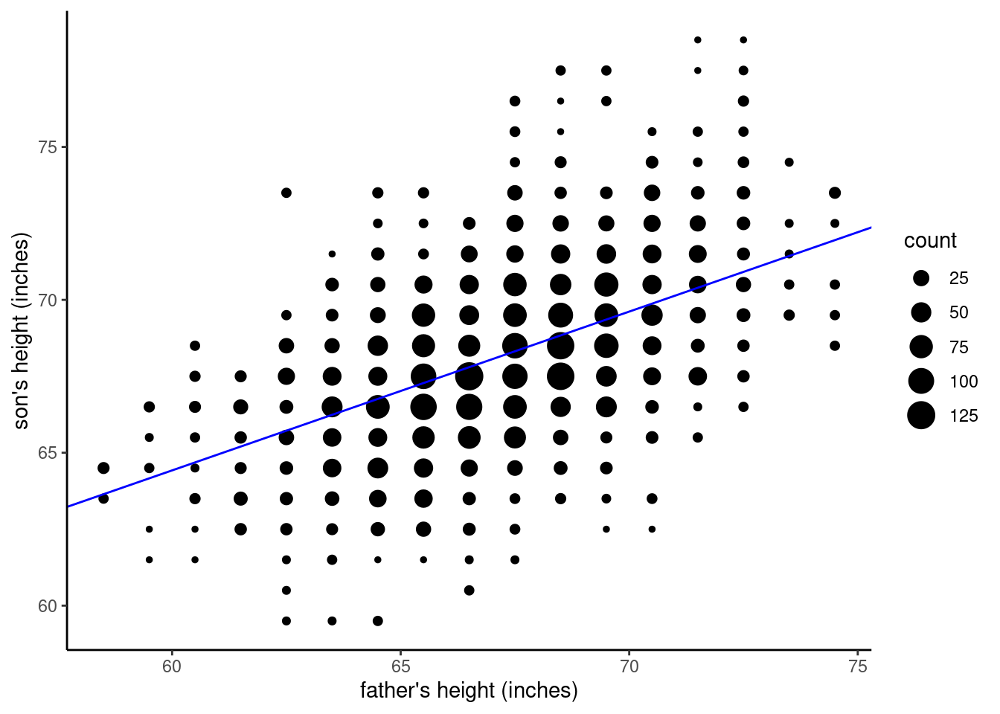
Now, to illustrate what the intercept refers to in this model, we need to expand the graph to include the point where \(x = 0\). The next graph shows this, where a red vertical dashed line marks the position of \(x = 0\). You can see that the regression line crosses at the value of the intercept, roughly at \(y = 33\). Note that we had to expand the axes (“zoom out”) in order to show this intersection, which is why the data is crammed into the upper right corner. This also illustrates how silly it is to care about the intercept value in this model, since the extrapolation is so far from the observed data.
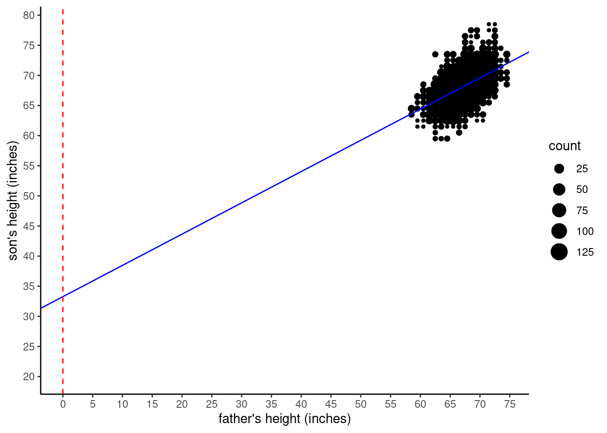
Next, let’s look at what happens when we center the father_height variable. We still plot the \(x = 0\) point, because that’s where the intercept value is calculated, but since we centered \(x\), that means the intercept (where the regression line crosses the \(x = 0\) line) is right in the middle of the data, around \(y = 68\).
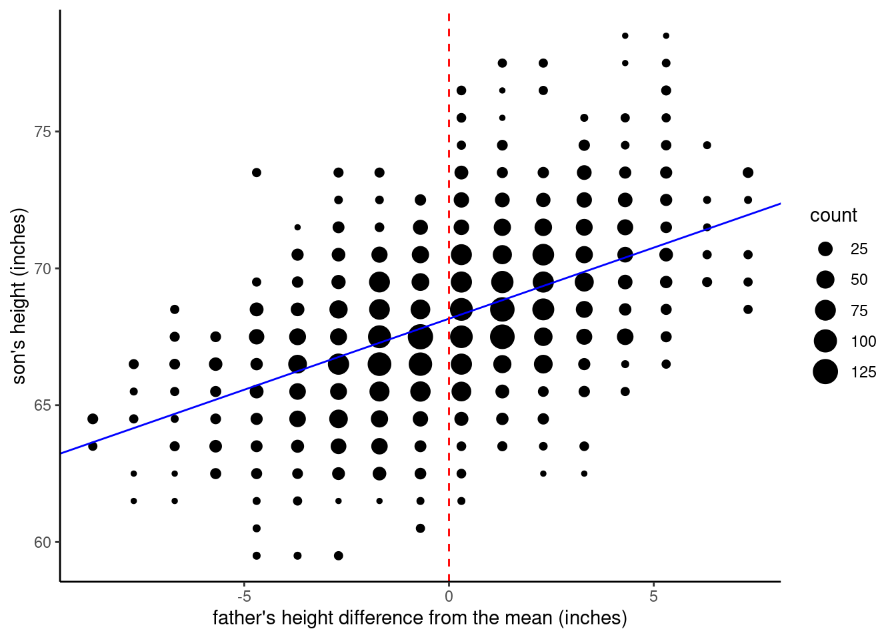
If we center both variables, then the intercept is (essentially) zero. In this graph, I plotted red dashed lines both where \(x = 0\) and where \(y = 0\), so you can see that when the variables are centered, the regression line passes right through the [0, 0] coordinate. This is because the OLS regression line always passes through the [mean of x, mean of y] point. It’s the centering that sets the mean of both variables equal to zero.
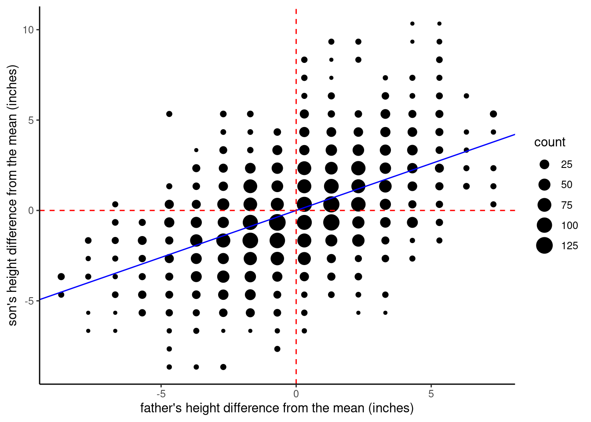
Finally, we can look at the version where we center father_height, but we subtract the average father height from the son_height values. Now you can see that the intercept value is close to 1, which we can interpret to mean that the average son is 1 inch taller than his father.
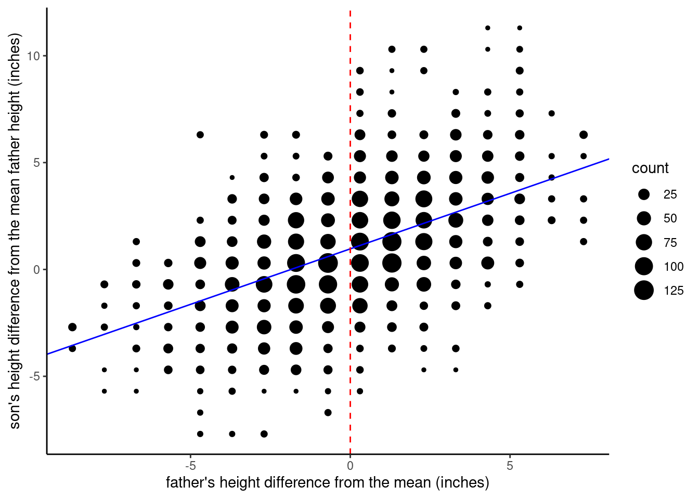
Recap discussion of intercept
If all of this is a little dizzying to think about, that’s okay; it’s easy to get turned around when thinking about how to interpret the intercept. That’s why I highly encourage that you memorize the following definition I keep repeating, because not only is it a succinct mathematical definition, it can help you orient yourself when you feel turned around trying to interpret things.
Intercept: the value of \(y\) when \(x\) is zero
If you can memorize this, then it’s just a matter of plugging in the variables you are working with, and then carefully thinking about what a value of zero means in your predictor variable (\(x\)). Transformations like centering change the intercept, so they change how you can interpret the intercept as well.
The other comfort is that most of the time what we really care about is the slope, so often it’s not all that important to worry about exactly what the intercept value is anyway. But we do need to know what the intercept value is, especially if we want to make predictions, which we can talk about next.
Knowledge Checks
Time for some more self-quizzing:
- What are the two parameters of a linear model discussed above?
- What does “OLS” stand for, and what is it?
- Describe how you center a variable.
Calculating predictions
Once we have this model, making predictions is just a simple matter of addition and multiplication. In this discussion, let’s use the case where we have centered both variables. This means that both variables can be interpreted as “difference from average.” I’ll repeat the visualization here, with the red dashed lines removed:
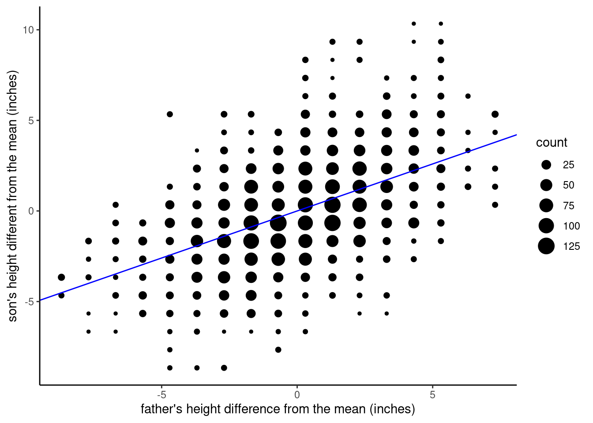
In order to make a prediction, all we need to know is the value of \(x\), the father’s height with respect to the average, because we know the slope is about 0.5 and the intercept is 0. So let’s say we pick a father who is 3 inches taller than average, we can just plug the values we know into the linear equation:
\(y = \alpha + \beta \times x\)
\(y = 0 + 0.5 \times 3\)
\(y = 1.5\)
And the result is that we expect the son to be 1.5 inches taller than average. Similarly, if we make a prediction for a father who is 2 inches shorter than average, we get:
\(y = 0 + 0.5 \times -2\)
\(y = -1\)
And the son is predicted to be 1 inch shorter than average. Simple!
Now let’s go back to the untransformed variables, and show how that math still works out, even though the intercept in that model is around 33. Let’s take the case of a father who is 72 inches tall. And recall that in that first model, the slope was still 0.5, but the intercept was around 33. So here, the calculation is:
\(y = 33 + 0.5 \times 72\)
\(y = 69\)
So a father who is 6’ is predicted to have a son that is about 5’9”.
Now strictly speaking this last calculation is a little off from the actual data, because I’ve been rounding off the slope and intercept values a bit. That’s fine when we’re looking at smaller values, but since we need to multiply the slope by 72 here, that rounding error adds up. So the calculations here are just for illustrating the process.
Note that we are not saying that these are perfect predictions. Simply looking at the data tells us that there’s a fair amount of variation, and fathers at a specific height have sons with a range of heights.
However, the math of linear regression means that even though these predictions aren’t perfect, they are the best predictions we can get with the data we have with this type of model, and recall that we defined “best prediction” meaning “minimizing errors.” So if you use this simple formula to guess all of the sons’ heights in this data set, and calculated the (squared) error for every prediction, the parameter values you get from regression will give you the smallest total errors, out of all other possible parameter values. This is what we mean when we say that fitting a model is a process that gives us the best estimation of parameter values.
Regression to the Mean
Now it’s time to step back and think a little more about what this overall pattern actually means. First, the slope is positive, so fathers who are taller than average also have sons who are taller than average. This makes sense.
But what about the exact value of the slope? Since it’s less than 1, it means that the sons are always predicted to be more average than the fathers.9 So if fathers are taller than average, their sons are predicted to be taller than average, but still not as tall as their fathers, and conversely, if fathers are shorter than average, their sons are predicted to also be shorter than average, but not as short as their fathers.
9 You may want to take a minute to work this out for yourself. Start with imagining what it would mean if the slope was exactly 1. It would mean that for every inch taller the father was, the son would also be an inch taller. And remember that the slope is in both directions, so for every inch shorter the father was, the son would also be an inch shorter. If the slope was greater than 1, then it would mean that if the father was shorter than average, his son would be even shorter than that, and if the father was taller than average, his son would be even taller than that. So if the slope is less than 1 (which it is), then it means that however the father is taller or shorter than average, the son is predicted to be less tall or less short – just less extreme either way.
This pattern was called “regression to mediocrity” by Francis Galton, whose work in 1886 was the direct predecessor of Pearson & Lee’s 1903 study. Galton chose these words because that’s the way he saw it, that somehow the offspring of exceptional people “regressed” away from exceptionality, towards “mediocrity.”
Interestingly, this is literally where the term regression comes from! We don’t use it with the same negative connotations, and we replaced “mediocrity” with the more mathematical “mean”, but this phenomenon is still called “regression to the mean.”
What’s fascinating about this is that it’s not some special case having to do with how traits are inherited, it’s a general phenomenon that is just a mathematical byproduct of how random variation works. Remember the concept of a model? It’s a simplified way of looking at the world. Well, it turns out that if we take the simple view of the linear model, and we also assume that there is some amount of random error, then the regression to the mean phenomenon occurs automatically and inevitably. We don’t have to include anything in our model about heritability, or degradation over time, or any of the things implied by the observation that children tend to be closer to the average than their parents.
One of the simple ways to illustrate this is to flip it around, and use childrens’ heights to predict their parents’. If we do that with our data, using the son_height variable to predict father_height, we get the same pattern, with a similar (though not exactly identical) slope of around 0.5. Now, I suppose you could make up a story where exceptional children somehow induce their parents to be more average, but in the case of physical height, that’s a bit of a stretch.10 But the main point is that you don’t need a “story” or explanation for this pattern, because it’s literally inevitable, just based on the math of variation. We will go through how to explore this yourself using R in a dedicated Code Tutorial.
10 No pun intended…
The significance of regression to the mean in daily life
The concept of regression to the mean is not just an obscure bit of statistical trivia. This is a real phenomenon that we can observe all the time, but unfortunately, we often misinterpret it. For example, another way this shows up is in repeated test scores. Take a hypothetical class of 100 students. On the first exam, the professor records the scores, and notes the best- and worst-scoring students. On the second exam, the professor notes that the best students have (on average) scored worse this time than the first time, and the worst students have (on average) improved.
The professor might be tempted to think that the high-scoring group got “lazy” or “complacent” and didn’t work as hard for the second exam, and that the low-scoring group were “motivated” to work harder and earned their improved scores. This might be true, but it would be better for the professor to remember that this pattern is all but a statistical inevitability, assuming there is any room at all for random variation. And given how many different factors can influence test performance on any given day, there is almost always room for random variation.
In your own life, you will also see examples of regression to the mean all the time, if you pay attention. Just remember that this is just a fact of life, because life has random variation, and when you have data with random variation and you have a situation where you are comparing the relationship between two variables, this phenomenon will occur.
Sidetrack: Anscombe’s Quartet and the power of visualization
Before we go on to discuss the application of regression with categorical predictors, there’s one other classic result that we need to discuss. In this course, I try to emphasize plotting and graphing your data just as much as performing statistical analysis. One of the reasons for this is that statistical analysis makes many assumptions, and if you don’t examine your data visually, you can sometimes miss where those assumptions may not be warranted.
To put it another way, jumping straight to fitting a model and computing statistics before you try to visualize your data is an example of trying to put inferential analysis before exploratory analysis, which is often dangerous. “Explore before you infer” is the data analysis way to say “look before you leap”!
One of the classic demonstrations of the importance of visualizing your data comes from a paper in 1973 by F.J. Anscombe. In this paper, Anscombe assembled four made-up data sets, which have come to be known as “Anscombe’s Quartet”. What he did was to very cleverly construct the data so that summary statistics and even linear regression results were all nearly identical across the four data setss. Each data set has the same number of values, the same mean values of the variables, and the same regression parameter values of intercept and slope. In other words, if you relied only on statistics and numerical analysis, you might easily conclude that the patterns in these data sets were identical.
However, as the figure below shows, this couldn’t be farther from the truth. This figure shows a separate scatterplot and regression line for each of the four data sets. Note that the regression line is identical for each, but note how different the pattern of data is for each.
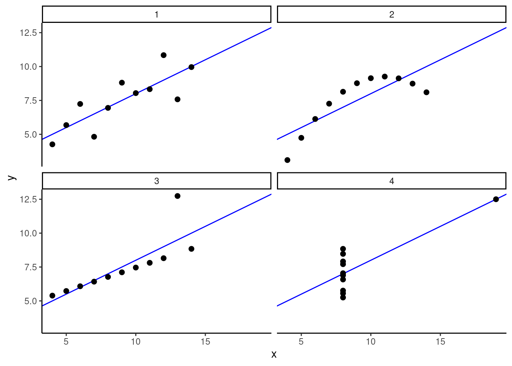
In the first data set, it looks similar to what we normally expect when we do regression: there’s a linear trend, but some random variation around the regression line. In the second data set, we see much less random variation, but instead of a straight line, we see an arcing pattern, which would be better fit by a quadratic model. In the third data set, we see much less random variation, but the regression line is being influenced by a single extreme “outlier” (a phenomenon we’ll look closely at later). And then finally in the fourth data set, there appears to be almost no variation at all in the \(x\) variable, except for one extreme data point. Nevertheless, despite these four very different patterns of data, the regression results are nearly indistinguishable.
Again, the message here is simply “make sure you visualize your data!” We spend a lot of time creating and looking at different scatterplots and visualizations in this unit, and this is something you should always include in your analyses, even after you become more expert fitting and interpreting statistical models.
- Describe how you calculate a “best guess” prediction for a response to a specific predictor value using a linear model.
- Imagine you perform a regression where your predictor variable is “average hours per week of study time” and your response variable is “salary five years after graduation”. Your model estimates an intercept of $40,000. How do you interpret that number? Do you think that’s a helpful quantity? What could you do to change the interpretation of the intercept?
- Imagine you have data from a study where participants reported the perceived “attractiveness” of people they have dated over time, and the participants themselves were also rated for “attractiveness”. Assuming you observe a typical “regression to the mean” pattern, how might that show up in your data? (Hint: there are multiple possibilities.)
- What is the take-home message of Anscombe’s Quartet?
Categorical predictors
Now that we have developed the concepts and tools above, we can apply them to another important case, when we have continuous (or interval) \(y\) data that we are trying to predict, but our predictor is categorical.
For our example, we will consider another classic data set from a sleep study, analyzed by “Student” in 1908.11 In this data, there were ten people who participated in a study, and the amount of extra sleep they had following two different treatments was recorded. The idea is to compare the amount of extra sleep between the two treatments, to see if one is better than the other.
11 The name “Student” was actually an anonymous pseudonym for the statistician who did this work, William Gossett. It’s an interesting story, because Gossett developed the \(t\)-distribution (which we will discuss later in the course) while working at the Guinness brewing company. The reason for the pseudonym was that Guinness didn’t want to tip off their competitors about the kind of research they were using to improve their brews. Statistics is a very real-world science!
Let’s see if we can frame this in terms of regression. We would like to predict the amount of extra sleep people get, but our predictor is just one treatment vs. another. Can we apply the methods of regression here?
In short: yes! But we need to do a little work to get there.
Dummy coding
A key concept here is often called “dummy coding” or sometimes “contrast coding.” The idea is that in order to apply the math of OLS regression, we need the predictor to be a number. But we really only have two values: Treatment A and Treatment B. So what we do is convert this difference to a number, by creating a variable that is 0 for Treatment A and 1 for Treatment B. If we do this, then our new variable can be interpreted as meaning “difference between Treatments A and B”.
Let’s make this conversion and plot the data as a scatterplot, just to see what that looks like.
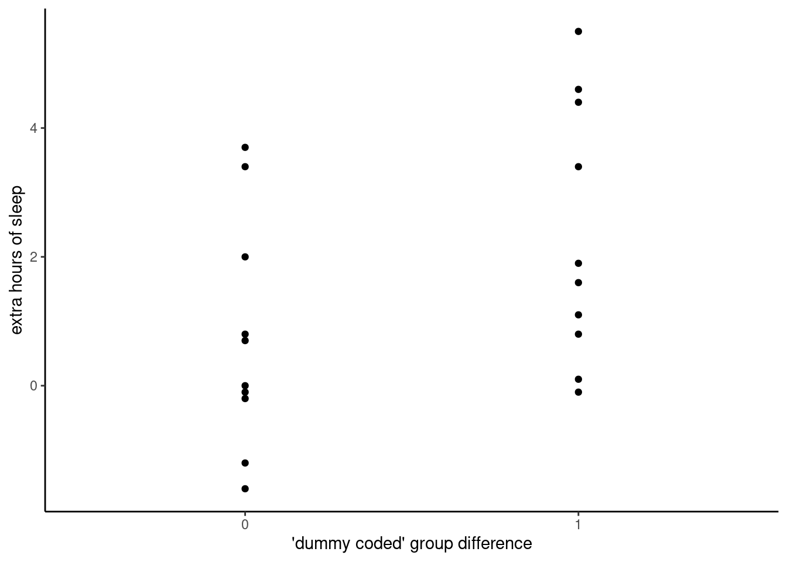
Visualizing categorical differences
This is not a bad first step, but there are better ways of visualizing this kind of data than with a scatterplot, especially when there is a lot of data. Our old friend John Tukey created a popular visualization called the “box-and-whiskers” plot, which is usually shortened to “boxplot.” Boxplots are excellent visualizations because they provide some distribution information, namely the quartiles that we looked at back in Unit 2.
Here’s an example of a boxplot of the same data as above.
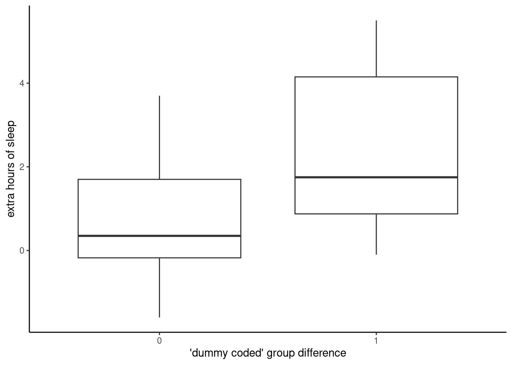
In a typical boxplot, the lower edge of the “box” is the 25% quantile, the line in the middle is the median (50% quantile), and the upper edge of the box is the 75% quantile. The “whiskers” are the lines that extend above and below the boxes, and in smaller data sets like this, they usually extend to the minimum and maximum values of the data. If there are extreme values beyond a certain range (which is usually 2.5 times the range of the “box”), then dots will be plotted in order to highlight these extreme values.
The important thing is that these are easy plots to make when you want to compare two or more groups of data. If you look between this boxplot and the corresponding scatterplot above, you should be able to see how they ultimately represent the same data, just with different shapes.
The linear model with categorical predictors
Applying the linear model to this data is then straightforward, once we have converted the categorical variable to a variable of 0’s and 1’s. R actually does this for us by default, if we have a variable that is non-numeric. But it can also be useful to do the conversion yourself, to make sure you understand which category corresponds to 0 and which corresponds to 1.
The reason to use 0 and 1 is that it means we can interpret the slope parameter estimate as the estimate of the difference between the two groups. Recall our definition of slope:
Slope: for every change of 1 unit in the \(x\) variable, expect a change of \(\beta\) units in the \(y\) variable.
If we code our categorical variable as 0’s and 1’s, then a change of “1 unit” is just the same as saying the difference between the two categories. If, for example, we coded our categories as 0 and 2, then the slope would only represent half of the difference between the two categories. Similarly, if we coded the categories -0.5 and 0.5, then the slope would be the same as if we coded them 0 and 1, because again, the slope is always interpreted as the slope relative to a change in 1 unit of the \(x\) predictor variable.
So how do we interpret the intercept, then? Again, recall our definition:
Intercept: the value of \(y\) when \(x\) is zero
This still applies, it’s just that now \(x = 0\) is not some point on a continuum, but rather it just stands for a particular category. In our current example, we set Treatment A to be 0 and Treatment B to be 1.
Exercise for the reader: how would the interpretations change if we centered the Treatment values to be -0.5 and 0.5 instead of 0 and 1?
We fit the model in R the same way we fit a regression model, and we get the parameter estimates in the same way as we do with continuous (or interval) data like the height data from Pearson & Lee. When we fit a regression model to this sleep data from Student/Gossett, we get an intercept of 0.75 and a slope of 1.58. Following the logic above, this means that the average extra sleep for Treatment A was 0.75 hours (because the intercept is the predicted value where the group variable is zero), and the Treatment B group averaged 1.58 more hours than Treatment A.
Summary of categorical predictors
This should be a bit of a relief: once we wrap our heads around dummy coding, analyzing data with categorical predictors turns out to be very similar to analyzing data with continuous (or interval) data, using the same methods as regular linear regression. Of course, it gets more complex when you have a categorical predictor with many different values, but the overall principles are actually the same. And this is true of many other advanced kinds of data analysis, in that they build upon the basic principles and concepts of the linear model.
Overall recap and summary
This was a big reading! Congratulations for making it through. Let’s briefly recap some of the main points we’ve covered:
- Analyzing relationships is a key concern for statistical analysis.
- Scatterplots are an invaluable tool for visualizing relationships, especially between two continuous variables.
- We can think of linear regression as a way to use one (or more) variables to predict another variable.
- The linear regression model is based on the simple geometric equation for a line, and in order to have a model that you can use to make predictions, you need to estimate the slope and intercept parameters of the model.
- There are different methods for estimating model parameters, but Ordinary Least Squares (OLS) is the fundamental mathematical technique for estimating simple linear model parameters.
- The OLS algorithm can be understood intuitively as minimizing the (squared) prediction errors of the model.
- The process of computing what parameter values result in the best model for a given set of data is called fitting a model.
- Interpreting the slope and intercept values of a fitted model takes some careful thought, but in short:
- Slope is the change in \(y\) expected for every 1 unit change in \(x\), and
- Intercept is the expected value of \(y\) when \(x = 0\)
- Regression to the mean is an inevitable byproduct of the mathematics of variation, and historically it’s how the term regression came to be applied to linear models, but the phenomenon can still lead to misunderstandings if we’re not careful.
- Using linear regression works the same way when we have categorical predictors, as long as we use “dummy coding”. This means that we convert categorical variables to variables that are made up of numbers that differ by 1 unit, such as a series of 0s and 1s.
Make sure that you understand each of these different concepts, and review the readings, work through the following Code Tutorials, and ask questions if any of the concepts are still eluding you. Some of these are hard to wrap your head around, and continuing to look at examples and to play around with code can help things to sink in.
Next steps
Fortunately, the Code Tutorials are relatively concise in comparison to this reading. I have split them up a little more by topic, one for Scatterplots, one for Regression Fitting, one for exploring Regression to the Mean, and one for Boxplots (and other plots).
Good luck!